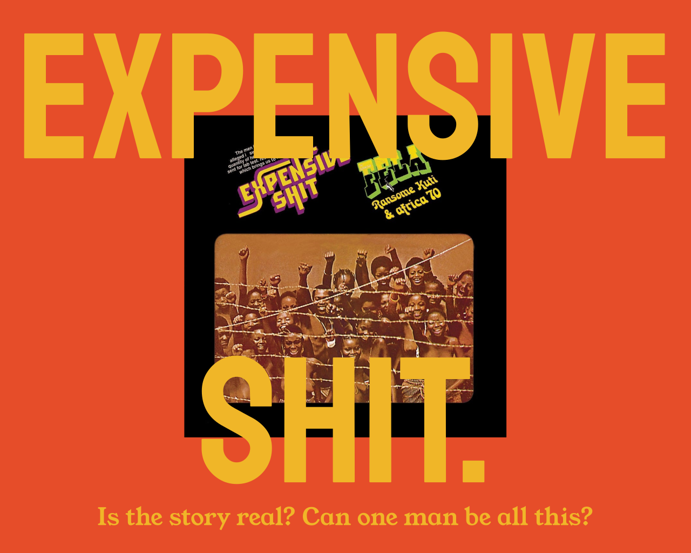

SO IT'S
Fela Kuti is about to turn 36. By this point, he’s pretty much the biggest musician on the African continent. One night, he’s sitting at home in his compound in Lagos, and he hears a knock on the door. It’s the police. They’ve been pestering him on and off for years, arresting him and conducting raids at all hours. They don’t like his music, mostly because of what it inspires. It’s gotten quite radical, and the acolytes that accompany him have taken on a similar slant. He’s making too much noise, in an asking-the-wrong-questions-about-the-wrong-people kind of way. Plus he smokes a lot of weed. So they figure they can nab him on a 10-year drug sentence.
They burst through the door. They can’t find any of his stash. (He’s flushed it.) They plant a joint on the ground in front of him. Fela dives on it, shoves the spliff into the back of his throat, and swallows it whole. The police take him in anyway. They tell him they’re gonna keep him in jail until it passes, and by passes they mean until he shits it out. They wait one day: no shit. They wait two days: still no shit. They wait a third day: Fela finally relieves himself but there’s not a trace of marijuana to be found. The police test it but the results come back clean.
They don’t know it, but Fela gets help from the other prisoners in the jail. As the legend goes, they teach him to wait until the middle of the night, when the guards are asleep, to use the same tiny latrine that the rest of the group relies on. He’s able to clear out his system before the test is conducted. So, by the time he goes on the third day, the joint has already passed and the police have no choice but to let him go. A few months later he drops an album.
And he names it...
It’s a legend, there’ll be different stories,” says Femi Kuti, the Grammy-winning musician and Fela’s son. “People will like to misrepresent it, people will distort it. But that’s what happens to legends.” He’s sitting in his office in his home in Lagos, and a trickle of light peaks through the window to his right. His arms are bare and the room looks warm. Fela had Femi at 23, at the precipice of his peak as Africa’s brightest star, when he was known across the globe for his unbending politics and unrivaled musical output. The elder Kuti played the saxophone (as well as the keys, drums, guitar, and trumpet) and was as much an activist as an artist. Fela’s cause, in music and in life, was a free, independent, and functioning Africa.
He could turn a single groove into a 30-minute marathon, calmly playing and conducting, an instrument at a time, until a mesh of sub-Saharan sounds appeared and pulsated, as if hive-minded. Just when it seemed to be over he’d alternate to a microphone and begin the sermon against neocolonial ineptitude and kleptocratic plunder (“Them leave sorrow tears and blood / Them regular trademark,” for example). He was frequently jailed for his work but never sought asylum from his home. Fela, you see, was a man of the people.
He died in 1997, years after contracting HIV in the opening salvo of the African AIDS epidemic, and now Femi and the rest of the Kuti family guard his memory and continue his fight.
In the Nigerian village of Abeokuta, the Kuti name rang far and wide, well before Fela made it famous abroad. Fela’s father, Israel, was a reverend and educator who descended from a long line of Christian musicians and helped form a local teachers union. His mother, Funmilayo, was an anti-colonial women’s rights activist who studied marxism and was a close associate of Ghanaian president and prime minister Kwame Nkrumah. The family was part of the elite, but believed in a Nigeria—and an African continent—set free from the yoke of colonialism, one that served its entire indigenous population.
“He was there to see the arising of people like Nkrumah, Patrice Lumumba, Sékou Touré, and Jomo Kenyatta, and all of the first-generation leaders who led Africans to independence from colonial power,” says Michael Veal, author of the Kuti biography Fela: Life and Times of an African. “So that’s his frame of reference, nationalism and independence. His frame of reference is believing in the African nation-state. And as his career unfolded, it was becoming disillusioned with the African nation-state.”
KWAME NKRUMAH
Ghanaian political leader and revolutionary who led the Gold Coast to independence from British colonial rule, becoming the first Prime Minister and later the first President of Ghana. A prominent advocate of Pan-Africanism, he played a key role in the formation of the Organization of African Unity. Nkrumah is remembered for his vision of a united Africa and his efforts to industrialize Ghana, though his presidency eventually faced criticism for authoritarianism and economic challenges, leading to his overthrow in a 1966 coup.
PATRICE LUMUMBA
Congolese independence leader and the first Prime Minister of the Democratic Republic of the Congo after it gained independence from Belgium in 1960. A passionate advocate for African unity and anti-colonialism, Lumumba sought to free Congo from foreign influence and exploitation. His tenure was marked by political turmoil, and he was deposed and eventually assassinated in 1961 under controversial circumstances, with involvement from both domestic rivals and foreign powers. Lumumba remains a symbol of African resistance and martyrdom.
JOMO KENYATTA
Kenyan anti-colonial activist and politician who became the first Prime Minister and later the first President of independent Kenya. A leading figure in the struggle against British colonial rule, he was associated with the Mau Mau uprising, though he denied direct involvement. After Kenya gained independence in 1963, Kenyatta promoted national unity and economic development, while also consolidating power and limiting political opposition. He is regarded as the founding father of Kenya and remains a central figure in the country's history.
AHMED SEKOU TOURE
Guinean political leader who became the first President of Guinea after leading the country to independence from French colonial rule in 1958. A strong advocate of African socialism and Pan-Africanism, he famously rejected continued ties with France, making Guinea the first French colony in sub-Saharan Africa to choose complete independence. Touré ruled Guinea as a one-party state for over two decades, during which his regime was marked by both efforts to promote national unity and economic development, and by widespread political repression and human rights abuses.
The second youngest of four children, Fela was born in 1938 and attended Abeokuta Grammar School in his early years, where he received music lessons, first on the piano and later on the trumpet and saxophone.
In the Western mind, Africa and Africans are often thought of as so individually and distinctly brutalized that they no longer form a connected culture, but Fela’s musical and political education was proof of the interconnectivity of the Black diaspora. In Nigeria, particularly near Lagos—the area where Fela increasingly cut his teeth as a young adult—a community of formerly enslaved Brazilians immigrated back to their homeland after capturing their freedom, bringing with them the luscious sounds of samba. In nearby Ghana, formerly enslaved Jamaicans made a similar return, carrying island grooves back to the African continent.
“It’s a reverse to the normal theory that drums came from Africa to the Americas,” says John Collins, a professor at the University of Ghana and musician who worked with Fela throughout the ’70s. “Some drums did find their way back, like the conga drums, for instance, the bongos and the congas from Cuba. So there was a reverse flow. The earliest we can trace back to is about 1800. Fela was already in something which was very mature in terms of the relationship between the Black diaspora and Africa itself.”
Even in the early 20th century, in places like London, Harlem, Port-au-Prince, or the manifold seaports of West Africa, vessels imported not only goods and merchandise but an array of musical practices and formats. In the world of Fela’s youth, the melodies of highlife—an intermixing of jazz standards, soul ballads, and traditional hymns from nearby Ghana—reigned supreme. Under the encouragement of his family, Fela set out for London to study medicine in 1958 like his two older brothers before him, but upon arriving in the center of the European colonial maze, he had no intentions of following an established path.
With a group of friends, Fela formed a highlife band, which he named the Koola Lobitos. After returning to West Africa, at the height of the region’s enchantment with the infectious rhythms of James Brown, he retrofitted the Lobitos with the help of a drummer named Tony Allen to blend funk and highlife. While touring abroad in 1969, he began dating a member of the Los Angeles Black Panther Party named Sandra Smith. Smith encouraged Fela to read the works of Malcolm X, Marcus Garvey, and other pan-African leaders. “Sandra gave me the education I wanted,” he said, years later. “She was the one who opened my eyes.”
He called his music Afrobeat. A typical sample began at a simmer, introducing each section of the band sequentially, until they all played at once. The percussives and bass are nearly always first, followed by the keys and other accompanying instruments, and then, almost always last, come the horns. Every band member played a simple riff, a quick repetitive jab, but combined, the cacophony of sounds formed something dense and throbbing.
Fela chose to speak in Pidgin English in all of his works, a creolization of traditional English and West African dialects. It was, and still is, the only way to broadly communicate with the anglophonic West African underclass. His methods of choice were monologue and dialogue, a preacher calling and pulpit answering. A song typically lasted anywhere between 15 and 25 minutes, and albums rarely contained more than two tracks total. On early songs like 1973’s “Gentleman,” the singer laments Africans who adopt the mannerisms and culture of their European colonizers (“You say you be gentleman / You go hungry / You go suffer”). By “Confusion,” two years later, he began to explicitly address the degradation of urban life in Nigeria and the governing failures of the post-colonial military regime (“When we talk, say confusion / Everything out of control”). Over the next five years, he dropped about 20 albums, all of them centered on the misdeeds of political elites, their exploitation of the working class, and their brutal enforcement of a rigid and corrupt hierarchy. On stage he would often wear bright Aso oke patterns or, sometimes, nothing but a simple wrap over his lower half.
He became more fervent in his political outlook, smoked weed more often, began to live like a star. The police increasingly interfered with his shows, tear-gassing and raiding the Shrine in attempts to silence him. Femi remembers that Fela always used to have an eye for trouble. It’s not that he did not know the sting of the baton, or the cold seclusion of a jail cell. He just cared about the cause of disruption more. “Every time you saw the police or the soldiers, that was when he would light this big spliff, big, huge spliff,” recalls Femi, laughing briefly. “I would say to myself, ‘Why? ... Why do you [light it]?’ You always knew when trouble was coming.”
John Collins spent time with Fela while he filmed his self-produced, and still unreleased, biopic Black President. (In 1979, Fela announced his candidacy for the office but was never formally recognized by election officials.) Collins would marvel at Fela’s competitive edge and how it spread like a flame to those close to him. “When you moved around with Fela, you have the impression that, just as he is, you too are immortal,” says Collins. Fela often drove the van that carried many of the movie’s cast and crew out to the countryside for filming. Around 1978, he disavowed his English surname, Ransome, and took up the title Anikulapo, Yoruba for the “one who holds death in his pocket.” On these dusty backroads, Collins remembers, Fela put that title to the test. The vehicle looked decrepit but its engine had been restored. When Fela encountered a rich passerby he would dare them to race. Collins remembers drivers often giving up the moment they caught a glimpse of Kuti in the driver’s seat. “He was doing this all the time, nonstop. But you didn’t feel you were going to die either from a road accident or anything, or the police or army attack, you never felt that,” says Collins. “I guess it’s the same as if you were in the army and you go into battle, and you feel your bunch isn’t going to die because you’re well-armed or something like this. It’s the nearest time I think I’ve ever felt to the army. I’m a very peaceful person and I’ve never been in the army, but I felt that comradeship. It wasn’t just me, it was all of us. “We can’t die, we’re with Fela.”
ANOTHER TALE: IT'S
Fela is now 39 years old. His relationship with the military is as contentious as ever. On his last album, Zombie, he compared them to a mindless horde, taking and following orders without a second thought, brutalizing the public. They did not take kindly to it. Plus he and his crew have a habit of instigating disputes with them on the street near his house. One fight ticks the soldiers off so much that they decide to invade the home. They break down the barbed-wire fence Fela had built around the perimeter of the compound. What ensues is, really, at its most basic component, war.
The soldiers attack everyone in the compound. They beat them bloody with batons and guns. A number of Fela’s wives say afterward that they were raped by the invading forces. Fela’s mother is visiting him, the soldiers find her on the second floor of his house, and throw her out of the window. She dies the following year from injuries sustained during the assault. Fela’s skull is broken and he’s arrested, but it heals and he’s eventually set free.
He pays for his mother’s funeral but decides he is not finished with the authorities. On the one-year anniversary of her death he loads her casket into the back of a truck. Drives the truck to Dodan Barracks, the home of Nigeria’s head of state, Olusegun Obasanjo. He approaches a security barrier, unloads the casket, and leaves it in front of the building. “Obasanjo’s soldiers had killed my mother. … That’s the least I could do,” he later said. His next album featured a picture of the events on its cover.
He names it...
A few months after his mother’s death, most of Fela’s band left him. They said they’d had enough when he wouldn’t pay them after a concert in Berlin. Fela regrouped, made a new collective (the Egypt 80), but kept running into walls. He went broke, but bounced back. Most of the Nigerian public turned on him, but he kept going. He was thrown in jail again and again; and still, he refused to stop.

“The government called him many times to pay him to keep quiet,” recalls Femi. “He never took it. He never seeked asylum. He could have left for any country like many people did. He stood. He fought. They took all his money. They stopped him from performing. Look, he became dead broke, I saw Fela go from poverty to being one of the richest people on this continent, the continent of Africa, to being one of the poorest people. We had no one.”
What caught him for good was not the cops, or the soldiers, or the pain, or the prisons: It was his body. “Fela came out of prison in ’88 and he had all these rashes, [but] the rashes went [away], so it was, ‘Oh, did he contract a disease in prison?’” says Femi. “And then he fell ill in ’90, ’94, ’95, and then we started to question, ‘Wow, could it be AIDS? Could it?’” It’s likely Fela didn’t know it, at least at first, and even by the time it became obvious, he refused to acknowledge that he had HIV. He referred to it as a “white man’s disease.” He released three more albums and performed until he couldn’t. And then on August 2, 1997, Fela died in his home.
He was, of course, a walking contradiction. His mother was an avowed feminist and yet he believed that women should be subservient. His siblings were doctors and yet he denied the existence of AIDS. He knew he would be attacked violently for his political choices and yet, precisely in spite of this, ran toward them. Fela was fearless and unbending. From this he did things, things that people never really do, because they never have the ability, never have the will. And yet from this he also did things that people always seem to do, because they always have the ability, always have the will.
And that’s the thing about Fela: The same things that motivated the bravery are the same things that motivated the carelessness. His ability to make those around him forgive the bad is exactly why folks are still so enthralled with the good. He was so skilled at blurring the lines, he didn’t even have to try to. His music is a part of this and his politics are tantamount to it, too, but who the man was—who the man is—well, that’s what really makes Fela, Fela. The people who love him do so in spite of his contradictions, the parts of him that would never fit quite as well with anyone else. There is a cost to that. Does his cause make him a good person? Does any artist’s? The incomparable feel of Fela Kuti—his art, his life, his outlook—is what makes it possible for him to be even more popular in death than he was before it and, not inconsequentially, also morphs his memory into a kind of caricature. Fela was, and still is, inherently intoxicating; a human blur. What is sure is that he will always inspire a sect and a gospel along with it. And it will not matter whether they really know the man behind the horn, because he is unknowable in more than one way, and incomprehensible just as often. Plus it is irrelevant in either case. The one who held death in his pocket was a legend and his music is much the same.
I ask Femi what Fela would think of the whole ordeal. Would he even want the recognition? How could he? How could he not? The son thinks of an answer, then says the quiet part loud.